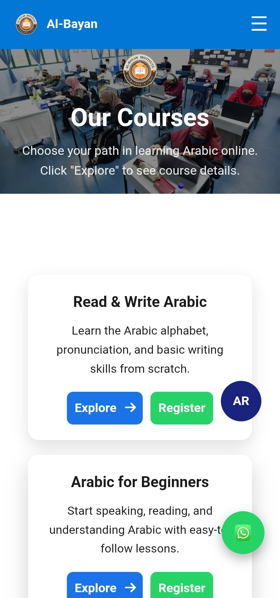
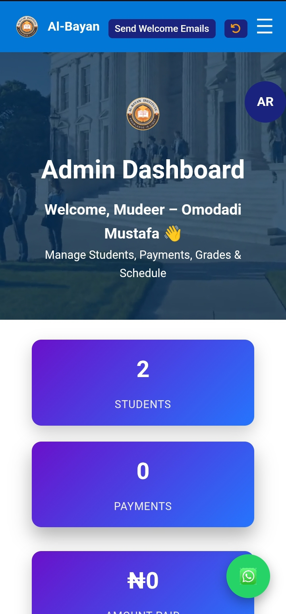

Project Gallery



Case Study
A complete LMS-style educational system designed for an Arabic institute, featuring student management, CBT exams, admissions, and academic dashboards.
Core Modules
Learning System
Exam Engine
Control Dashboard
Al-Bayan Portal is a full educational management system built for an Arabic institute to digitize learning, exams, admissions, and student tracking in one platform.
It improves traditional classroom management by introducing structured digital workflows for both students and administrators.
Tracks student progress, courses, and academic activities.
Automated exams with instant grading and results.
Admin tools for managing students, courses, and data.
Digital application and approval workflow system.


The system successfully digitized the institute’s academic workflow, reducing manual work and improving student performance tracking.
It also established a scalable foundation for future LMS expansion.
I build full educational systems, dashboards, and academic platforms tailored to institutions.
Contact Me